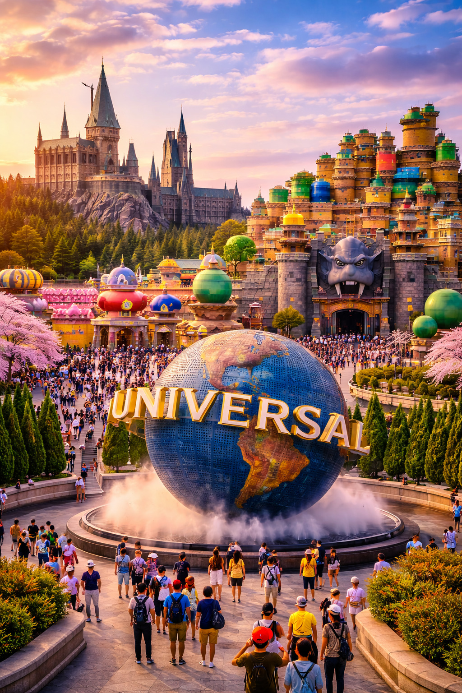

AI 生成意境圖📜 樂園概覽
日本環球影城（USJ）不僅是大阪最具人氣的觀光景點，更是世界級的主題樂園。這裡以高度還原電影場景而聞名，擁有包括「超級任天堂世界」、「哈利波特的魔法世界」及「小小兵樂園」等多個極具吸引力的主題區域，每年吸引數百萬來自全球的影迷與粉絲前來朝聖。
✨ 絕對必玩的熱門區域
- 超級任天堂世界： 全球首個以任天堂遊戲為主題的區域。透過配戴「能量手環」，遊客可以像瑪利歐一樣收集金幣、挑戰磚塊，並體驗「瑪利歐賽車」等高科技動感遊戲，沉浸感極強。
- 哈利波特的魔法世界： 這裡高度還原了霍格華茲城堡與活米村。遊客可以漫步在電影場景中，品嚐著名的奶油啤酒，並體驗刺激的「禁忌之旅」飛車設施。
- 好萊塢美夢與小小兵樂園： 充滿歡樂的設施，無論是刺激的雲霄飛車或是可愛逗趣的小小兵表演，都能讓你度過充滿童趣與驚喜的一天。
💡 旅遊小貼士
由於 USJ 人潮眾多，**強烈建議事先購買「快速通關券 (Express Pass)」**，特別是針對任天堂區域。為了獲得最佳遊玩體驗，請務必安裝官方 APP，並於入園後即刻在 APP 內領取「區域入場保證券」或「整理券」。若想避開人潮，建議選擇平日入園，並在開園前一小時抵達現場排隊。